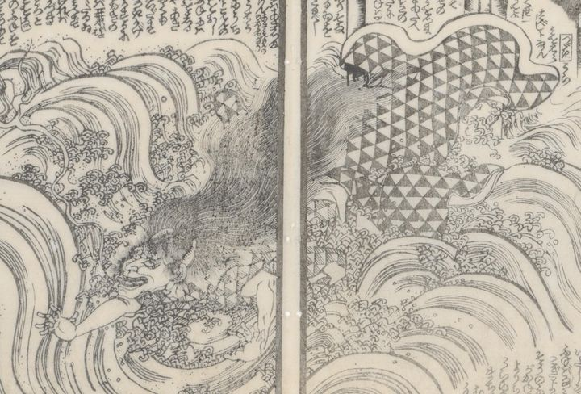

鬼薊の英の悪霊。湖に身を投げている。鱗の着物を着ている。鬼の形相。細長い陰火をまとっている。
著作者：柳水亭種清作・梅蝶樓國貞画／出典：親書誌：U426_nichibunken_0447：戀車淀翡翠／日付：2017／資源識別子：U426_nichibunken_0447_0021_0000
Copyright (c)2010- International Research Center for Japanese Studies, Kyoto, Japan. All rights reserved.